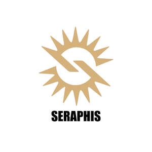

Trade Mark Journal No.2026/005 30 January 2026
UK00004325869 18 January 2026 (14,16)

- Class 14
- Brooches [jewellery]; Jewellery brooches; Brooches [jewelry]; Jewelry brooches; Brooches being jewelry; Decorative brooches [jewellery]; Gold plated brooches [jewellery]; Brooches [jewellery, jewelry (Am.)]; Cloisonne jewellery; Necklace charms; Silver-plated earrings; Lapel pins [jewellery]; Earrings; Cloisonné jewellery; Enamelled jewellery; Pendants [jewellery]; Silver earrings; Jewellery hat pins; Pewter jewellery; Lapel pins [jewelry]; Gold earrings; Clasps for jewellery; Jewelry clips for adapting pierced earrings to clip-on earrings; Jewelry stickpins; Choker necklaces; Necklaces [jewellery]; Pins [jewellery]; Pins being jewellery; Decorative pins [jewellery]; Cloisonné jewelry; Hat jewellery; Pearls [jewellery]; Clip earrings; Cloisonné jewellery [jewelry (Am.)]; Costume jewellery; Scarf clips being jewelry; Gold-plated earrings; Silver-plated necklaces; Charms [jewellery]; Charms for jewellery; Jewellery charms; Pendants [jewelry]; Wristlets [jewellery]; Jewelry hatpins; Lockets [jewellery]; Jewel pendants; Clasps for jewelry; Jewelry hat pins; Sterling silver jewellery; Ornaments [jewellery]; Bracelets [jewellery]; Pins [jewellery, jewelry (Am.)]; Gold plated earrings; Jade [jewellery]; Bracelets made of embroidered textile [jewellery]; Bracelet charms; Pearls [jewellery, jewelry (Am.)]; Lapel pins of precious metals [jewellery]; Medallions [jewellery, jewelry (Am.)]; Jewellery; Clips of silver [jewellery]; Pearls [jewelry]; Necklaces [jewelry]; Pins being jewelry; Pins [jewelry]; Silver necklaces; Silver thread [jewellery, jewelry (Am.)]; Dress ornaments in the nature of jewellery; Hoop earrings; Silver thread [jewellery]; Paste jewellery [costume jewelry (Am.)]; Paste jewellery [costume jewelry [Am.]]; Necklaces [jewellery, jewelry (Am.)]; Charms [jewellery, jewelry (Am.)]; Gold jewellery; Gold thread [jewellery, jewelry (Am.)]; Jewelry (Paste -) [costume jewelry]; Paste jewelry [costume jewelry]; Gold necklaces; Bracelets made of embroidered textile [jewelry]; Ornaments [jewellery, jewelry (Am.)]; Costume jewelry; Lockets [jewellery, jewelry (Am.)]; Charms [jewelry]; Jewelry charms; Charms for jewelry; Imitation jewellery ornaments; Lockets [jewelry]; Hat jewelry; Pierced earrings; Plastic costume jewellery; Bracelets [jewellery, jewelry (Am.)]; Cabochons for making jewellery; Rings being jewellery; Rings [jewellery]; Gold-plated necklaces; Amulets being jewellery; Amulets [jewellery]; Cloisonne pins; Gold thread [jewellery]; Jewellery chain of precious metal for necklaces; Jewellery made of bronze; Silver-plated bracelets; Jewellery made from silver; Ornamental lapel pins; Jewellery in the form of beads; Ivory [jewellery, jewelry (Am.)]; Diamond jewelry; Amulets [jewellery, jewelry (Am.)]; Ivory jewellery; Rings [jewellery, jewelry (Am.)]; Jewellery rope chain for necklaces; Bracelets [jewelry]; Jewellery incorporating pearls; Silver thread [jewelry]; Jewellery fashioned from bronze; Pendants; Jewellery made from gold; Necklaces; Jewellery, including imitation jewellery and plastic jewellery; Jewellery chain of precious metal for bracelets; Bangle bracelets; Body costume jewellery; Pendant watches; Cabochons for making jewelry; Jewelry; Cabochons; Gold thread jewelry; Gold thread [jewelry]; Trinkets [jewellery, jewelry (Am.)]; Shoe jewellery; Cuff-links; Earrings of precious metal; Medals; Gold medals; Commemorative medals; Gold coins; Gold; Medals made of precious metals; Medals coated with precious metals; Trinkets of bronze; Gold plated bracelets; Commemorative coins; Gold bracelets; Silver; Gold rings; Gold plated rings; Silver bracelets; Silver rings; Gold bullion coins; Gold ingots; Silver ingots; Gold plated chains; Prize cups of precious metal; Silver thread; Watches made of plated gold; Precious metal trophies; Gold bullion; Spun silver [silver wire]; Silver bullion; Prize cups made of precious metal; Gold chains; Silver watches; Objet d'art of enamelled gold; Figurines made from gold; Jewellery containing gold; Commemorative shields; Prize cups of precious metals; Gold, unwrought or beaten; Lapel badges of precious metal; Gold alloy ingots; Coins; Commemorative statuary cups of precious metal; Silver, unwrought or beaten; Commemorative statuary cups made of precious metal; Objet d'art of enamelled silver; Watches made of gold; Commemorative shields of precious metal; Platinum rings; Gold alloys; Figurines made from silver; Medallions; Silver alloy ingots; Trophies of precious metals; Key rings; Charms for key rings; Key rings and key chains, and charms therefor; Decorative key rings; Retractable key rings; Key rings of leather; Leather key rings; Non-metal key rings; Key rings [split rings with trinket or decorative fob]; Key rings, not of metal; Key rings of precious metal; Key chains [split rings with trinket or decorative fob]; Key rings [trinkets or fobs]; Retractable key rings [trinkets or fobs]; Key rings of precious metals; Key chains; Key fobs [rings] coated with precious metal; Key chains for use as jewelry; Imitation leather key rings; Charms for key chains; Key rings [trinkets or fobs] of precious metal; Key chains for use as jewellery; Metal key chains; Key fobs; Metal key fobs; Key chain tags; Split rings of precious metal for keys; Key fobs, not of metal; Key chains of precious metal; Retractable key chains; Key fobs of common metal; Finger rings; Key chains [trinkets or fobs]; Signet rings; Leather key fobs; LED finger ring watches; Engagement rings; Key chains as jewellery [trinkets or fobs]; Key fobs made of precious metal; Key charms [trinkets or fobs]; Key fobs of precious metals; Key charms of precious metals; Ring bands [jewellery]; Gold-plated rings; Rings [trinket]; Ring holders of precious metal; Imitation leather key chains; Key tags [trinkets or fobs]; Key holders [trinkets or fobs]; Silver-plated rings; Key charms coated with precious metals; Rings [jewelry]; Key fobs of imitation leather; Key holders of precious metals; Rings of precious metal; Eternity rings; Badges of precious metal; Watches bearing insignia; Metal badges for wear [precious metal]; Lapel pins; Ornamental hat pins; Lanyards for keys; Cuff links made of silver plate; Sew-on tags of precious metal for clothing; Insignias of precious metal; Identification bracelets [jewelry]; Jewelry pins for use on hats; Tie pins; Pins (Tie -); Ornamental pins; Pins (Ornamental -); Decorative pins of precious metal; Ornamental pins made of precious metal; Bib necklaces; Jewellery rope chain for bracelets; Bead bracelets; Jewellery rope chain for anklets; Bracelets; Amulets [jewelry]; Jewellery chain; Chains [jewellery, jewelry (Am.)]; Jewellery chain of precious metal for anklets; Wooden bead bracelets; Bangles; Jewelry chains; Chains [jewelry]; Identification bracelets of precious metal [jewelry]; Drop earrings; Beads for making jewelry; Closures for necklaces; Necklaces of precious metal; Pendants for watch chains; Plastic bracelets in the nature of jewelry; Rhinestones for making jewelry; Trinkets [jewelry]; Beads for making jewellery; Jewellery chains; Chains [jewellery]; Wire of precious metal [jewellery, jewelry (Am.)]; Shoe jewelry; Crucifixes as jewelry; Ivory jewelry; Ankle bracelets; Bracelets for watches; Watch bracelets; Friendship bracelets; Flexible wire bands for wear as a bracelet; Bracelets and watches combined; Charity bracelets; Bracelets [charity]; Bracelets of precious metal; Bracelets made of rubber or silicone with pattern or message; Metal expanding watch bracelets; Wrist straps for watches; Straps for wrist watches; Wrist watches; Wristlet watches; Platinum jewelry; Watchbands; Watch clasps; Straps for wristwatches; Amulets; Trinkets [jewellery]; Jade; Jewellery stones; Charms; Jewellery fashioned of semi-precious stones; Jewelry charms in precious metals or coated therewith; Charms [jewellery] of common metals; Hat ornaments of precious metal; Ornaments (Hat -) of precious metal; Crucifixes of precious metal, other than jewelry; Jewels; Crucifixes of precious metal, other than jewellery; Crucifixes as jewellery; Spinel [precious stones]; Prayer beads; Fitted covers for jewelry rings to protect against impact, abrasion, and damage to the ring’s band and stones; Chalcedony used as gems; Statuettes made of semi-precious stones; Jewel chains; Square gold chain; Jewelry guard chains; Rope chain [jewellery] made of common metal; Neck chains; Rope chain made of precious metal; Tie chains of precious metal; Articles of jewellery made from rope chain; Watch chains; Chains (Watch -); Fobs for keys; Jewellery foot chains; Chain mesh of semi-precious metals; Chain mesh of precious metals [jewellery]; Cameos [jewelry]; Cufflinks; Fashion jewellery; Bridal headpieces in the nature of tiaras; Items of jewellery; Jewellery items; Precious jewellery; Jewellery in semi-precious metals; Jewellery caskets; Jewellery boxes; Jewellery for personal adornment; Imitation jewellery; Body jewellery; Jewellery incorporating diamonds; Jewellery for pets; Fake jewellery; Personal jewellery; Jewellery in non-precious metals; Facial jewellery; Jewellery findings; Crosses [jewellery]; Paste jewellery; Jewellery (Paste -); Jewellery articles; Articles of jewellery; Jewellery in precious metals; Jewellery of precious metals; Threads of precious metal [jewellery, jewelry (Am.)]; Artificial jewellery; Jewellery for personal wear; Jewellery fashioned from non-precious metals; Jewellery cases; Ear clips; Tie clips; Clips (Tie -); Rings [jewellery] made of non-precious metal; Rings [jewellery] made of precious metal; Parts and fittings for jewellery; Fitted jewelry pouches; Parts and fittings for watches; Leather jewelry boxes; Decorative articles [trinkets or jewellery] for personal use; Jewellery products; Collectible coins; Non-monetary coins; Collectable monetary coin sets; Copper tokens; Tokens (Copper -); Monetary coin sets for collecting purposes; Ceramic discs for use as tokens of value; Platinum ingots; Jewellery, authenticated by non-fungible tokens [NFTs]; Ingots of precious metals; Commemorative boxes of precious metal; Ingots of precious metal; Statues and figurines, made of or coated with precious or semi-precious metals or stones, or imitations thereof; Figurines [statuettes] of precious metal; Figurines of precious stones; Watches, authenticated by non-fungible tokens [NFTs]; Figurines made of imitation gold; Statues of precious metals; Gems; Medallions made of non-precious metals; Medallions made of precious metals; Jewellery boxes of precious metals; Platinum alloy ingots; Jewelry boxes of precious metals; Ornaments [statues] made of precious metal; Statues of precious metal of religious icons; Figurines of precious metal; Holiday ornaments [figurines] of precious metal, other than tree ornaments; Miniature figurines [coated with precious metal]; Ornamental figurines made of precious metal; Figurines for ornamental purposes of precious stones; Figurines coated with precious metal; Model figures [ornaments] made of precious metal.
- Class 16
- Cards; Greeting cards; Greetings cards; Gift cards; Printed cards; Collectable cards; Christmas cards; Flash cards; Birthday cards; Invitation cards; Blank cards; Baseball cards; Holiday cards; Index cards; Paper loyalty cards; Blister cards; Business cards; Correspondence cards; Index cards [stationery]; Scoring cards; Note cards; Picture cards; Anniversary cards; Pop-up greetings cards; File cards; Occasion cards; Menu cards; Paper boxes for storing greeting cards; Filing cards; Name cards; Motivational cards; Post cards; Musical greeting cards; Record cards; Reference cards; Musical greetings cards; Collectable trading cards; Announcement cards; Announcement cards [stationery]; Place cards; Tags for index cards; Printed recipe cards; Printed informational cards; Card files; Gift wrap cards; Blank note cards; Printed mail response cards; Social note cards; Printed greeting cards with electronic information stored therein; Dinner mats of card; Credit card imprinters, non-electric; Imprinters (Credit card -), non-electric; Advertisement boards of card; Packaging boxes of card; Manually operated credit card imprinters; Pop-up books; Table mats of card; Padded bags of card; Envelopes; Envelopes [stationery]; Manila envelopes; Plastic envelopes; Envelope papers; Envelopes for stationery use; Envelope paper; Stickers [stationery]; Postcards; Seals [stationery]; Figurines made from cardboard.
SERAPHIS LTD